岩壁寶主
按照等級排序首先前往南第3區挑戰挑戰岩壁寶主。
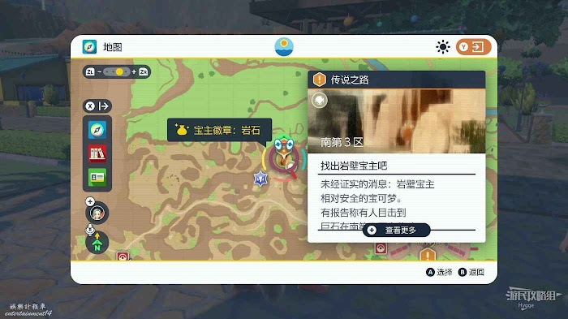
岩壁寶主是一隻巨大的毛崖蟹，該寶可夢的等級為16級。該寶可夢的屬性為岩石，使用水、草、地面、格鬥、鋼屬性的寶可夢可以更加容易將其擊敗。
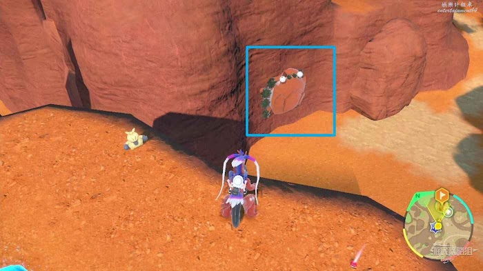
靠近岩壁寶主即可進入戰鬥，將它擊敗後會跳下崖壁逃走。
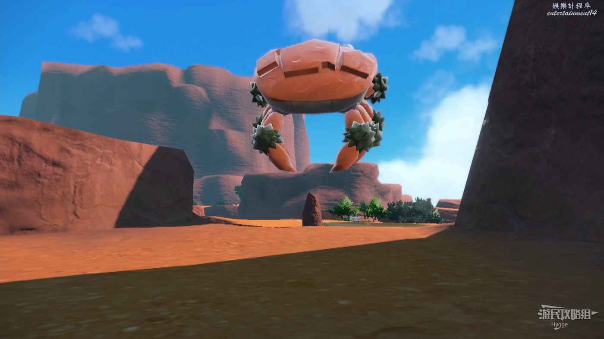
追上寶主後會看到它破壞崖壁打開了一個山洞，並從中取出一個發光的食物食用。
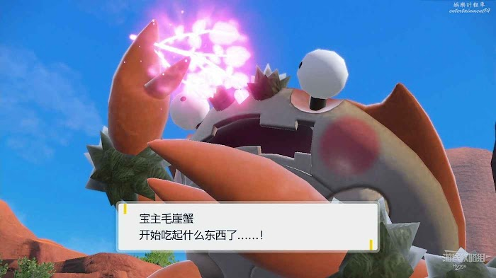
吃下食物的毛崖蟹會恢復至最佳狀態，但此時派帕會出現和我們一起戰鬥。在與寶主進行的兩場戰鬥中，每場戰鬥都可以使用一次太晶化能力。
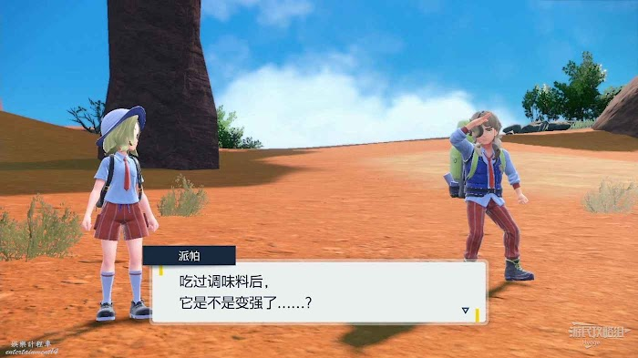
將毛崖蟹擊敗後我們可以在山洞中找到秘傳調味料中的【秘傳：甜味料】。
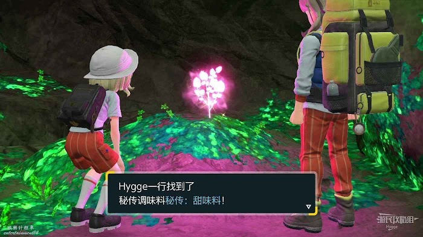
同時獲得派帕送給我們的岩壁寶主徽章。
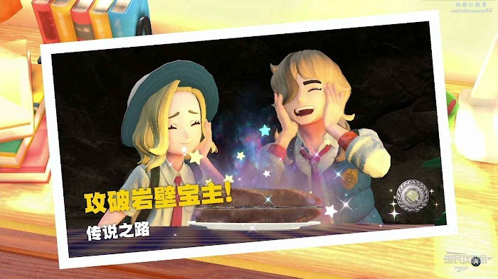
將使用甜味劑製作的三明治喂給故勒頓後可以解鎖故勒頓的衝刺能力。
隨後在騎乘故勒頓時，按下左搖杆可以加速移動了。

長空寶主
接下來前往西1區尋找並挑戰長空寶主。
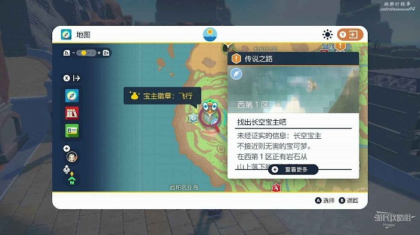
長空寶主會一直向下抛灑滾石，在向山上走的時候注意躲避即可。
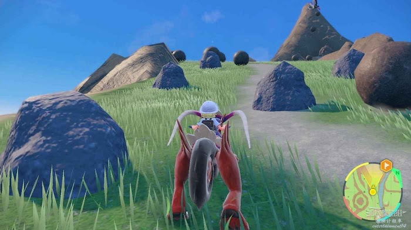
長空寶主是一隻巨大的下石鳥，該寶可夢等級為19級。該寶可夢的屬性為飛行和惡，使用電、冰、岩石或妖精屬性的寶可夢可以更加輕鬆的擊敗該寶主。
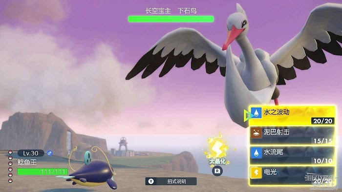
將長空寶主第一次擊敗後，它同樣會食用秘傳食材恢復狀態。隨後再次進入戰鬥和派帕一起將其擊敗。
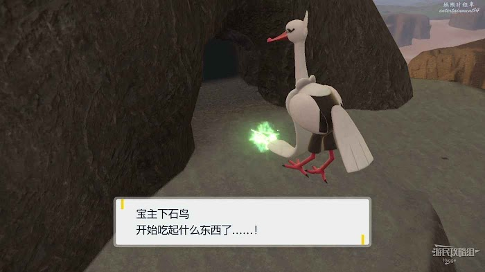
將長空寶主擊敗後再山洞中找到秘傳調味料【秘傳：苦味料】，並獲得派帕送給我們的長空寶主徽章。
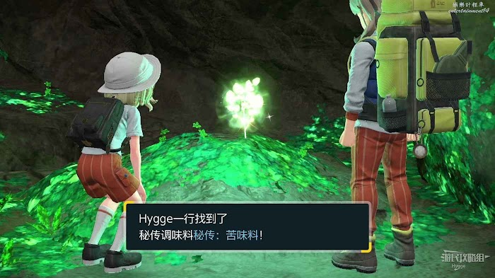
再次將製作出的三明治喂給故勒頓後，可以解鎖故勒頓的衝浪能力。
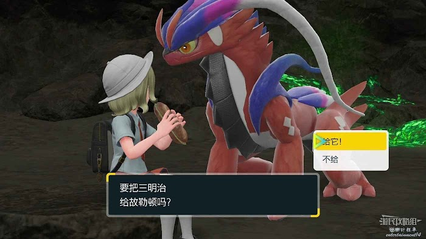
隨後騎乘故勒頓在水上移動時也可以加速移動，並且能夠在水中跳躍了。

潛鋼寶主
潛鋼寶主位於地圖東第3區，潛鋼寶主為28級的拖拖蚓，該寶可夢的屬性為鋼屬性，建議使用火、格鬥或地面屬性的寶可夢進行戰鬥。
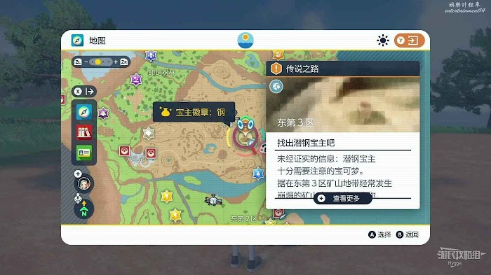
來到目的地後我們可以看到寶主頭伸出地面，其餘部分均在地面以下，靠近寶主後它會立刻移動變換位置，騎乘故勒頓追趕數次後即可進入戰鬥。
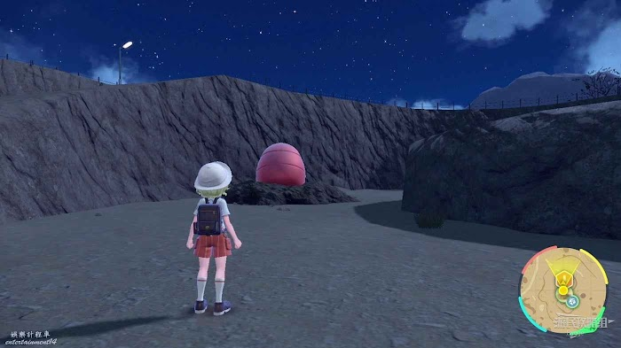
第一次將寶主擊敗後它會挖洞離開。
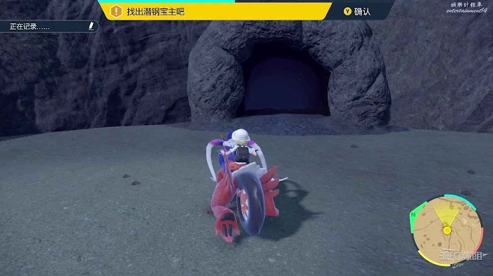
穿過洞穴後即可找到寶主，再次追逐數次後和派帕一起將其擊敗。
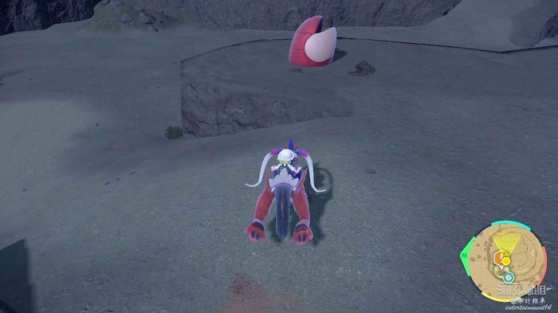
擊敗潛鋼寶主後可以在山洞中找到秘傳調味料【秘傳：鹹味料】。
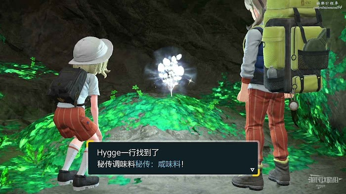
將製作成的三明治喂給故勒頓後解鎖高跳能力。
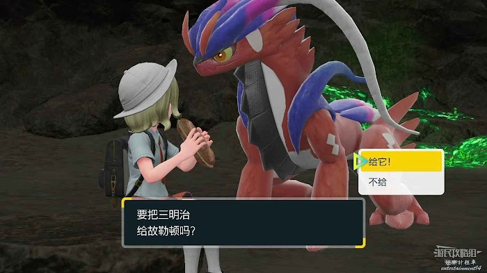
長按B鍵可以跳的更高從而到達一些之前無法跳上的平臺了。

土震寶主
土震寶主位於地圖西側的烘烘沙漠中，該寶主等級為44級。
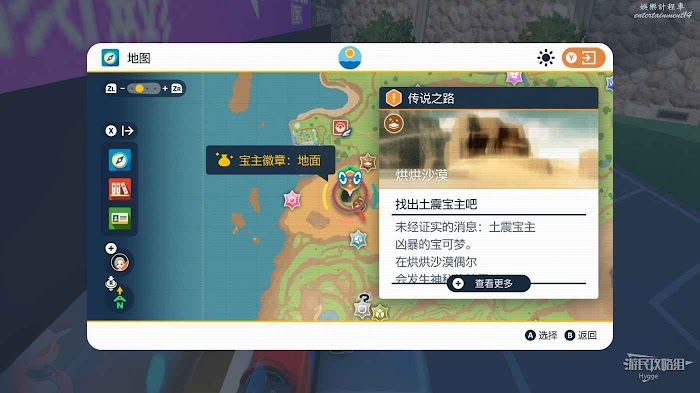
土震寶主是一隻巨大的雄偉牙，擁有地面和格鬥兩種屬性，建議在戰鬥時使用水、草、冰、飛行、妖精或超能力屬性的寶可夢。
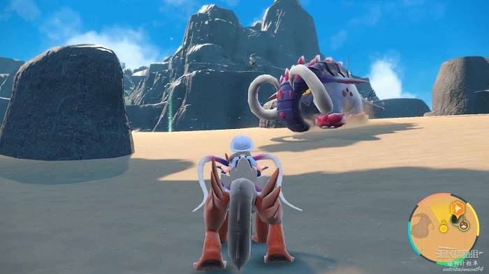
第一次將其擊敗時，該寶主會逃到其他地方，我們可以在地圖上找到寶主的最新位置。
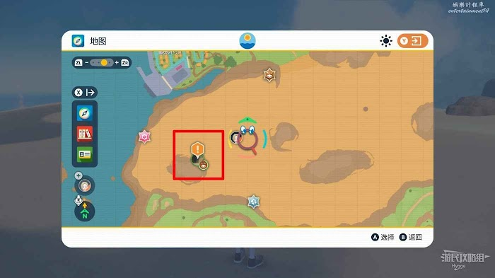
吃下秘傳調味料的土震寶主狀態恢復，隨後和派帕一同再次將其擊敗。
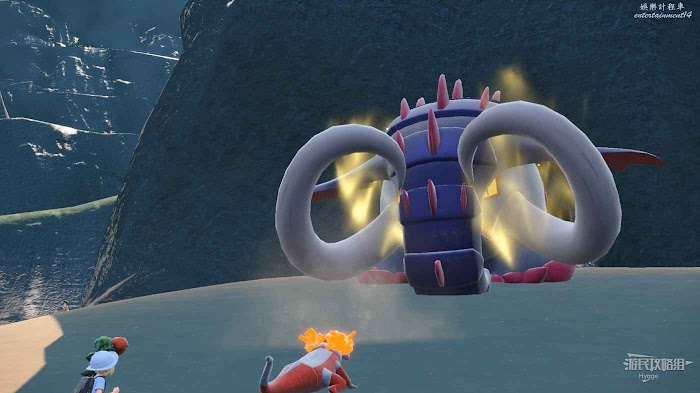
擊敗寶主後在山洞中可以找到【秘傳：酸味料】。
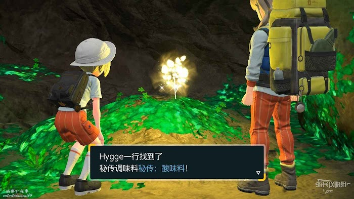
將三明治喂給故勒頓後獲得滑翔能力，隨後我們在騎乘故勒頓的時候，在空中按下B鍵可以進行滑翔。

偽龍寶主
偽龍寶主位於地圖西北方向的大鍋湖中，偽龍寶主的等級為55級，屬性為水和龍屬性，推薦使用電或草屬性的寶可夢進行戰鬥。
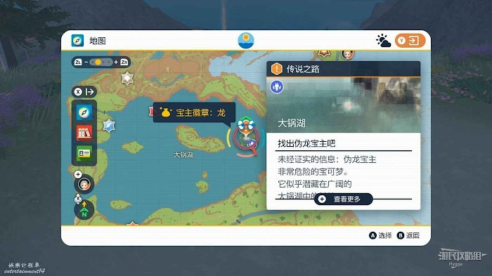
來到大鍋湖後在島中找到發出【啵啾啵啾】聲音的米立龍與其互動即可進入戰鬥。
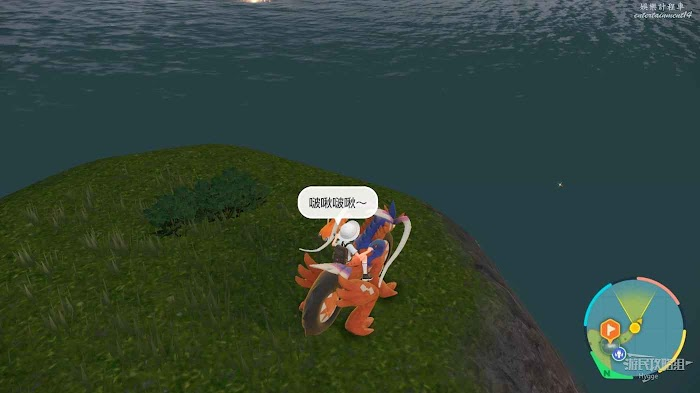
將吃吼霸擊敗後它會逃至另外一個小島上。
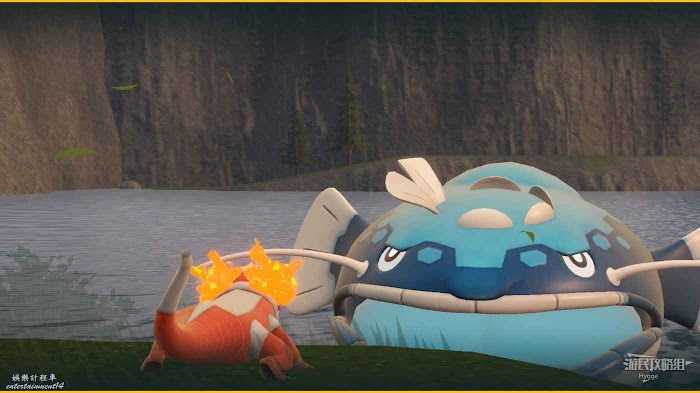
在地圖上可以找到偽龍寶主逃走的地點。
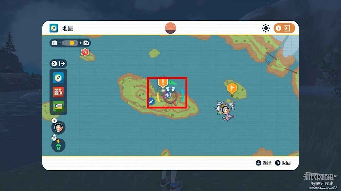
來到小島旁邊後在淺灘上與米立龍互動，和派帕一起擊敗吃吼霸。
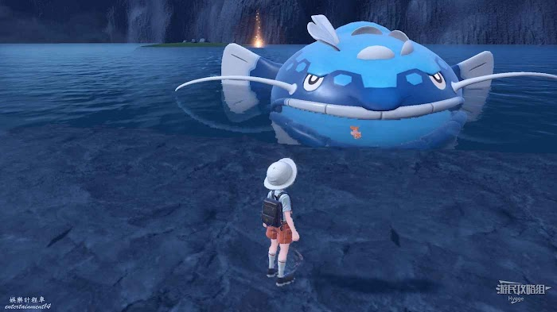
擊敗吃吼霸後我們還需要再次擊敗米立龍才可以徹底將偽龍寶主打敗。
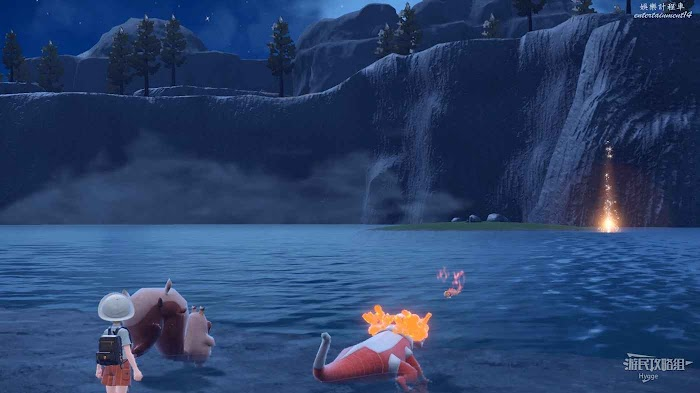
隨後在山洞中可以找到【秘傳：辣味料】。
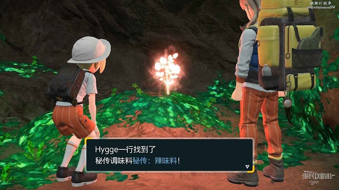
將三明治喂給故勒頓後解鎖攀岩能力。
 至此傳說之路就已經完成。
至此傳說之路就已經完成。